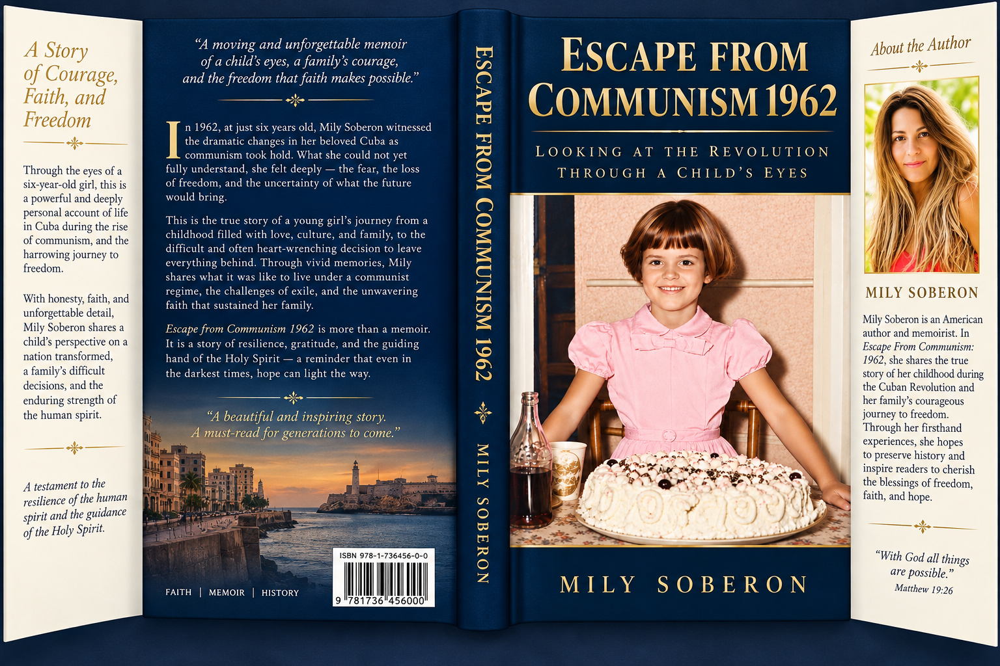
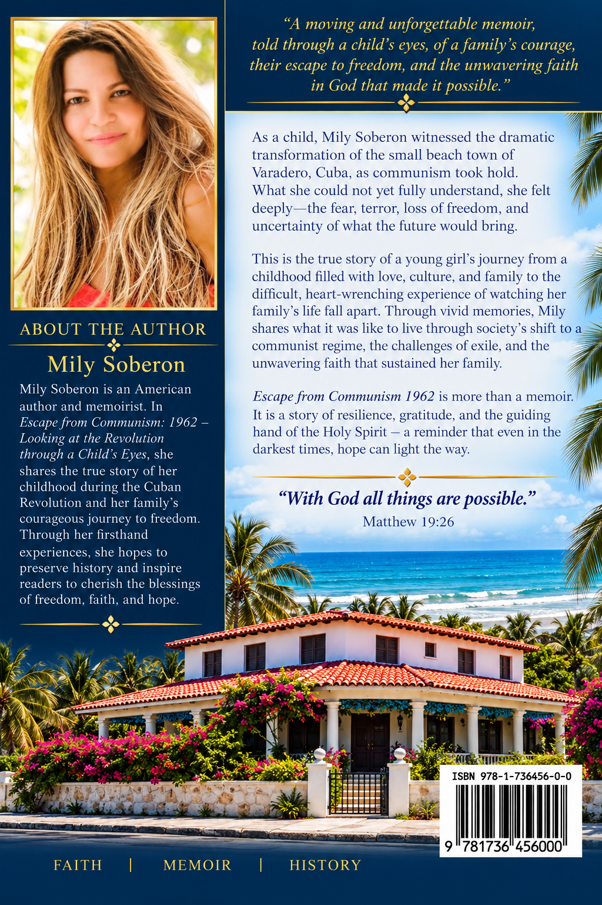
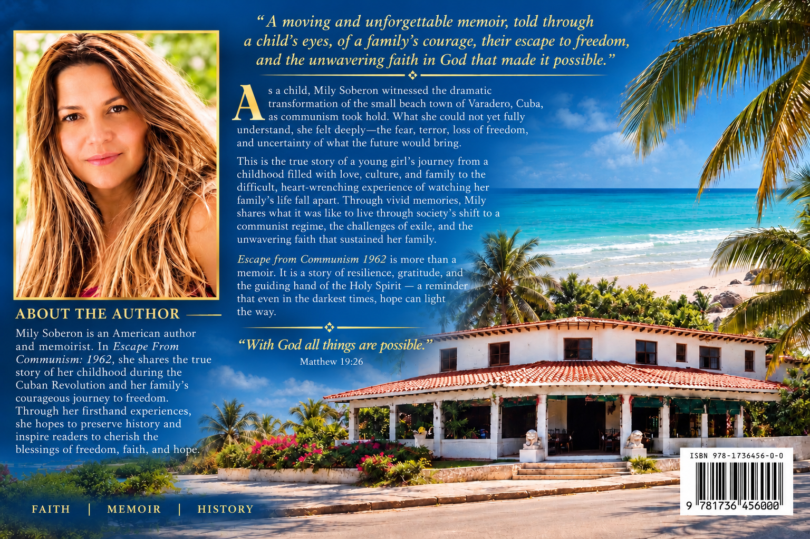

Faith
God’s presence sustained a family through uncertainty and transition.

A Life Remembered
God’s presence sustained a family through uncertainty and transition.
Love, sacrifice, and memory carried a family through historic upheaval.
A personal testimony of resilience and the enduring value of liberty.
A child’s perspective on courage, renewal, and the strength to move forward.
The Book
In Escape from Communism: 1962, Mily Soberon shares the story of growing up in Cuba amid political upheaval, family sacrifice, and a life shaped by resilience, faith, and hope.
This memoir reflects a powerful chapter in history while revealing the enduring strength of the human spirit and the transformative love of God.


About the Author
Mily Soberon is an American author whose writing is inspired by faith, family, and the freedom she and her loved ones fought to protect. Her story bridges personal memory and historical reflection with warmth, honesty, and spiritual depth.
Through her memoir, she invites others to reflect on courage, spiritual endurance, and the lasting importance of liberty.
Where My Story Began

Mily was born and raised in Varadero Beach, Cuba, where childhood memories, family traditions, and spiritual foundations shaped the woman she would become.
Her journey carries the weight of history, the tenderness of family, and the hope of a new beginning. It is a story of survival, gratitude, and the unwavering belief that God is faithful through every season.
The
“The Holy Spirit placed this story upon my heart and guided the words as I wrote them.”